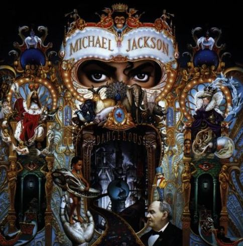
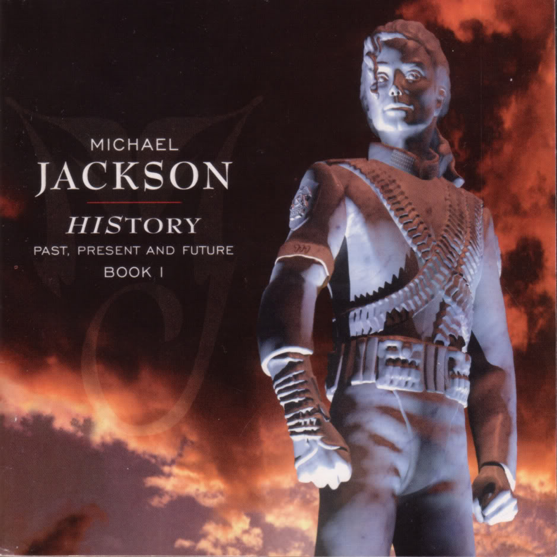
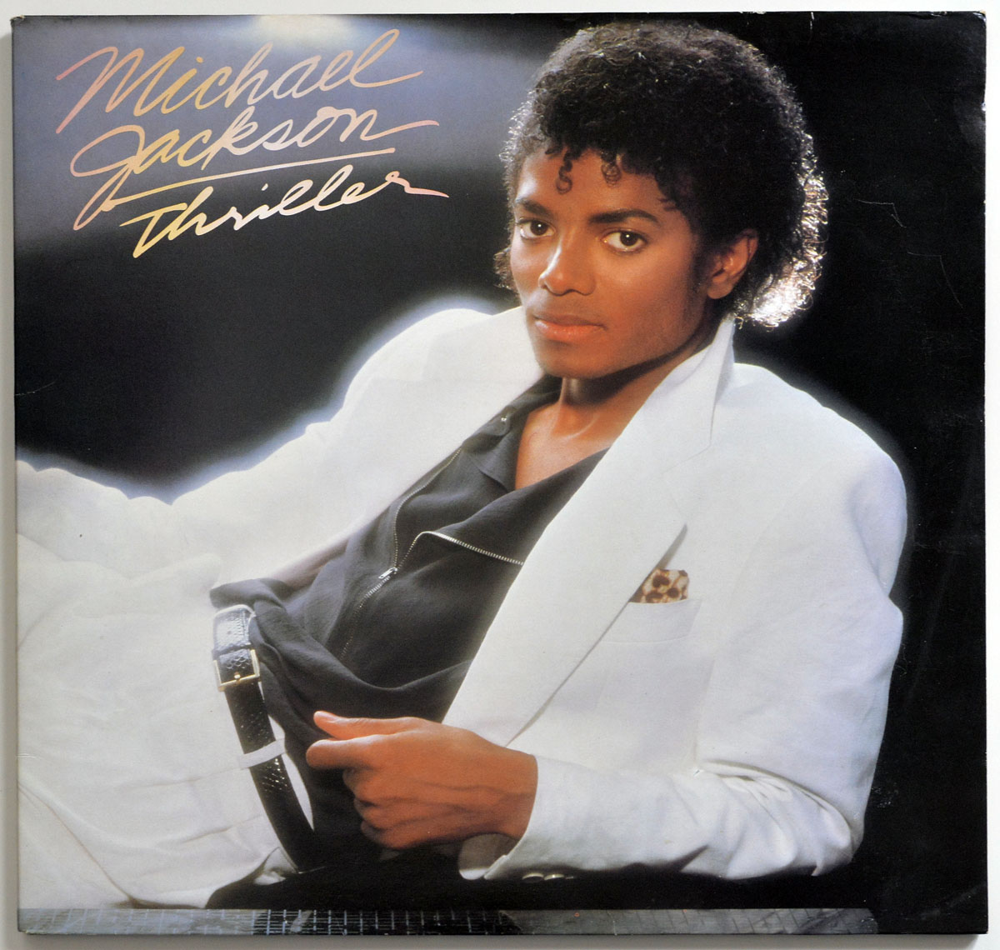

Álbum Dangerous- 1991
Tesoros Ocultos en 'Dangerous' de Michael Jackson: Un Vistazo Profundo al Álbum que Redefinió el Pop. Este artículo explora las joyas menos conocidas de la obra maestra de Michael Jackson, 'Dangerous'.

"Dangerous", el icónico álbum de Michael Jackson, se erige como un monumento en la historia de la música pop. Este artículo se sumerge en los recovecos menos explorados de esta obra maestra, destacando las joyas ocultas que han permanecido en la penumbra de su popularidad. Desde las colaboraciones vanguardistas que desafiaron las convenciones del momento, hasta las letras profundas que revelan capas inexploradas de la mente del Rey del Pop, cada rincón de "Dangerous" es un testimonio de la genialidad musical de Michael Jackson. Explore con nosotros la experimentación sonora que caracteriza a este álbum, descubriendo cómo su impacto perdura, dejando una huella indeleble en la evolución de la música contemporánea. En este viaje, nos sumergimos en la esencia misma de un álbum que no solo redefinió el pop, sino que también dejó un legado perdurable en la vasta obra artística de Michael Jackson.
Álbum HIStory. Past, Present and Future- 1995
HIStory": Un Viaje a Través de la Épica Musical de Michael Jackson. Este artículo destapa los secretos y la grandeza detrás del álbum monumental "HIStory".

No solo es una colección de canciones; es un viaje fascinante a través de la épica musical de un ícono. Este artículo desentraña las complejidades y grandezas que definen este hito en la carrera del Rey del Pop. Desde los estruendosos éxitos que resonaron en todo el mundo hasta las conmovedoras baladas que tocan el alma, "HIStory" es un tapiz musical que explora el presente y pasado del legendario artista.
Este álbum no se limita a la música; es una narrativa en sí mismo. Desde los temas sociales que aborda hasta las controversias personales que lo rodean, cada pista revela capas profundas de la vida y la percepción de Michael Jackson. "HIStory" no solo documenta la evolución artística del artista, sino que también deja una marca indeleble en la historia de la música pop.
Acompáñanos en este fascinante recorrido mientras exploramos la riqueza de sonidos, las letras impactantes y la ambición creativa que convierten a "HIStory" en un testimonio perdurable del genio musical de Michael Jackson. Este álbum va más allá de las melodías; es una declaración de la singularidad y la maestría de un artista que ha dejado una huella imborrable en la historia de la música.
Thriller- 1982
"Thriller": Más Allá del Éxito, una Inmersión en la Leyenda de Michael Jackson. Este artículo se aventura en el corazón del álbum que redefinió la música pop, desentrañando los secretos detrás de cada nota y la magia que convirtió a "Thriller" en un fenómeno cultural.

Desde los beats inconfundibles hasta las colaboraciones legendarias, exploraremos cómo este álbum se convirtió en un punto de referencia en la carrera de Michael Jackson y en la industria musical en su conjunto. Sumérgete en la esencia del "Rey del Pop" y descubre por qué "Thriller" sigue siendo un hito imbatible, trascendiendo el tiempo y dejando un legado eterno en la música popular.